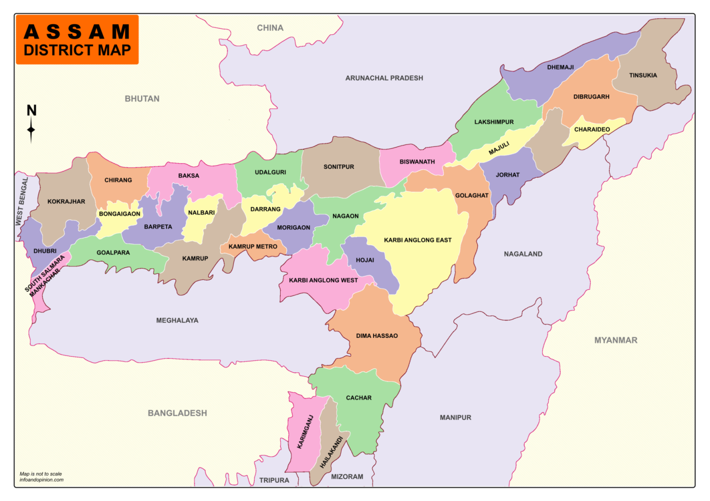

Assam
Made Fresh By: Shehraan Rathee
--- Assam ---
Assam, state of India. It is located in the northeastern part of the
country and is bounded to the north by the kingdom of Bhutan and the
state of Arunachal Pradesh, to the east by the states of Nagaland and
Manipur, to the south by the states of Mizoram and Tripura, and to the
west by Bangladesh and the states of Meghalaya and West Bengal. The
name Assam is derived from the word asama, meaning “peerless” in the
now extinct Ahom language. The neighbouring states of Arunachal
Pradesh, Nagaland, Mizoram, and Meghalaya were once part of Assam. The
capital, formerly Shillong (now the capital of Meghalaya), was shifted
to Dispur, a suburb of Guwahati, in 1972. Area 30,285 square miles
(78,438 square km). Pop. (2011) 31,169,272.
More Informtion...
Forests, formerly extending over nearly two-fifths of the state’s
area, were reduced by the creation of Meghalaya and Mizoram in the
early 1970s. In the early 21st century about one-third of Assam
was covered with various types of woodlands, including tropical
evergreen and deciduous forests, broad-leaved hill forests, pine
forests, and swamp forests, as well as grasslands. Assam is home
to some 75 species of trees, many of which have commercial value.
Sal (Shorea robusta) and hollong (Dipterocarpus rhetusus) trees
are among the most bountiful of the hardwoods. Bamboo, orchids,
and ferns also are abundant.
Click here to read more about Assam
